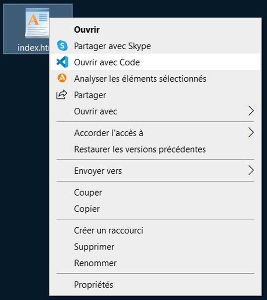
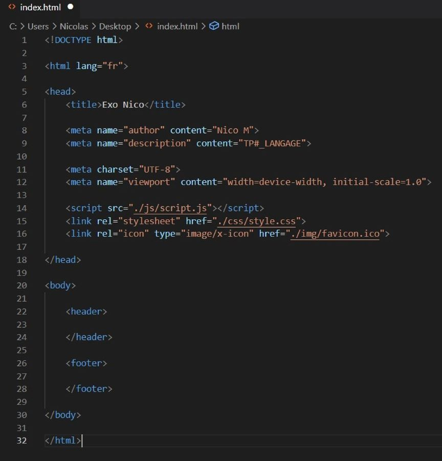
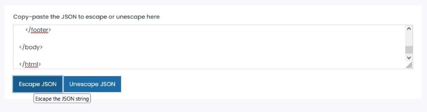
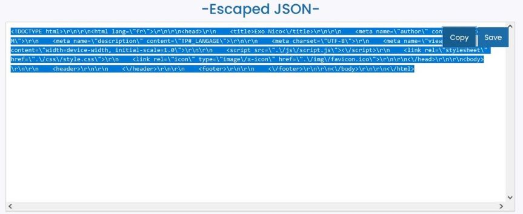
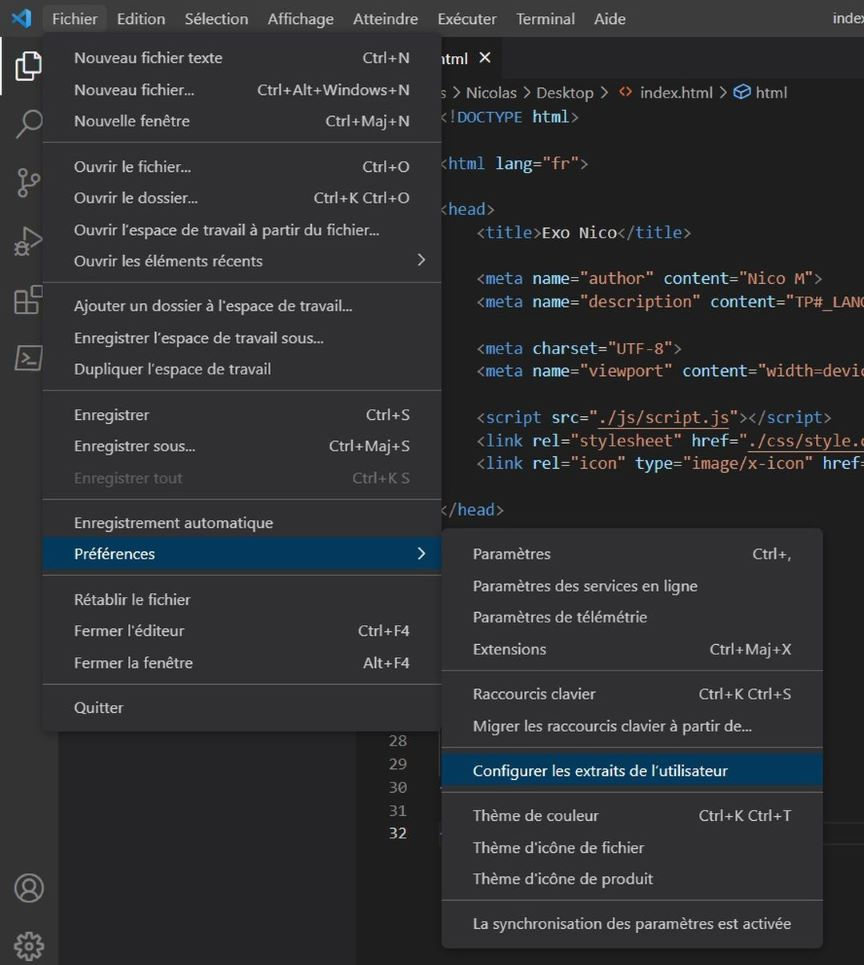
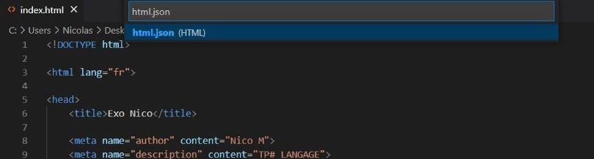
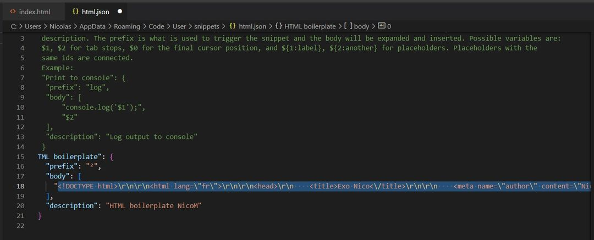
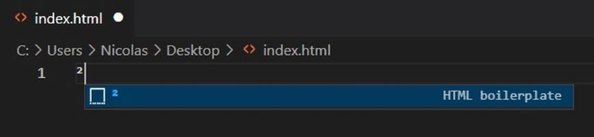
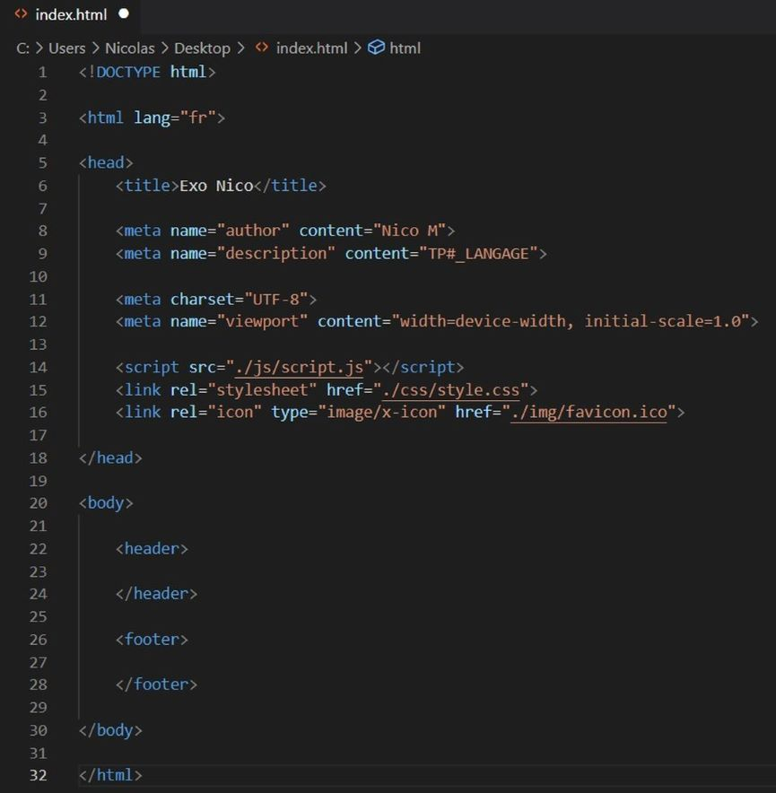

1. Créez un fichier html :

Créez un fichier .html et ouvrez le avec Visual Studio Code (clic droit, "Ouvrir avec Code"
Vérifiez bien que le langage en bas (dans VSC) est bien sur "HTML"
2. Formalisez votre template :

Mettez en forme votre template (base) html. ci-dessus :
- Title : Le titre de votre document (celui qui apparait sur l'onglet de votre navigateur)
- Meta "author" : La personne qui a réalisé la page html
- Meta "Description" : Une rapide description de l'objet de la page html
- Meta "charset" : Le format de codage (ici UTF-8, le plus standard)
- Meta "viewport" : Balise pour faciliter l'affichage sur mobiles, plus d'explications : ICI
- Script : Lien vers le fichier javascript (ici le fichier "script.js" dans le répertoire "js"
- Stylesheet : Lien vers le fichier css (ici le fichier "style.css" dans le répertoire "css")
- Favicon : Lien vers l'image (16x16 ou 32x32) qui définie le raccourci de votre onglet
3. Copiez et collez votre code HTML dans un traducteur en ligne :

Vous pouvez utiliser freeformatter. Copiez bien
le code directement (pas le fichier) et collez le dans la zone de texte.
ctrl+a puis ctrl+c dans VSC pour sélectionner et copier le code. ctrl+v dans la boite de texte de
freeformatter pour le coller.
4. Recopiez le code JSON ainsi obtenu :

Copiez bien l'intégralité du code et gardez le dans le presse papier le temps de la manip suivante.
Vous pouvez sauvegarder le code dans un fichier html.txt et le renommer en html.json après avoir copié
le code. Cela permet de partager directement le fichier à quelqu'un pour qu'il récupère votre template.
5. Configurez les infos utilisateur sur Visual Studio Code :

Créez un fichier .html et ouvrez le avec Visual Studio Code (clic droit, "Ouvrir avec Code"
soustitre de l'image
6. Ouvrez le fichier html.json :

Créez un fichier .html et ouvrez le avec Visual Studio Code (clic droit, "Ouvrir avec Code"
soustitre de l'image
7. Créez votre boilerplate dans html.json :

Créez un fichier .html et ouvrez le avec Visual Studio Code (clic droit, "Ouvrir avec Code"
soustitre de l'image
8. Assignez une touche raccourci à votre boilerplate :

Créez un fichier .html et ouvrez le avec Visual Studio Code (clic droit, "Ouvrir avec Code"
soustitre de l'image
9. Résultat :

Créez un fichier .html et ouvrez le avec Visual Studio Code (clic droit, "Ouvrir avec Code"
soustitre de l'image